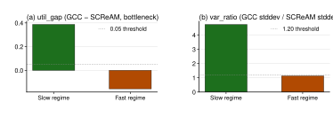
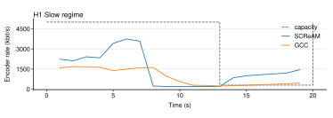
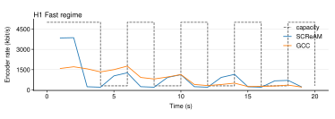

regime-dependent
When the network's bandwidth drops sharply, SCReAM sends less than GCC does — at least on the runs we tested.
scream_sends_at_least_5_percentage_points_less_than_gcc_during_the_low_capacity_phasegcc_sender_rate_swings_at_least_20_percent_more_than_scream_during_the_low_capacity_phase| Outcome | Predicates |
|---|---|
| Supported when all |
scream_sends_at_least_5_percentage_points_less_than_gcc_during_the_low_capacity_phasegcc_sender_rate_swings_at_least_20_percent_more_than_scream_during_the_low_capacity_phase
|
| Refuted when any |
neither_pattern_holds_in_any_test_case
|
| Inconclusive when any |
patterns_hold_only_when_capacity_changes_slowlypatterns_hold_only_when_capacity_changes_quickly
|
Zhang 2019's bottleneck-phase comparison reproduces on the slow-changing capacity-step network, where SCReAM under-uses the bottleneck cap relative to GCC and GCC's rate variance is markedly higher. The same comparison flips on the fast-changing network because neither controller reaches steady state between transitions.



| regime | experiment | scream_util_mean | gcc_util_mean | util_gap | scream_rate_stddev_kbps | gcc_rate_stddev_kbps | var_ratio | verdict |
|---|---|---|---|---|---|---|---|---|
| Slow regime — capacity holds each level ~7 s before flipping | scream-vs-gcc-720p | 2.56 | 2.95 | 0.387 | 124.0 | 587.1 | 4.73 | supported |
| Fast regime — capacity flips every 2 s, no time to settle | scream-vs-gcc-720p-fast | 3.09 | 2.93 | -0.156 | 577.4 | 653.9 | 1.13 | refuted |
SCReAM vs GCC head-to-head at 720p30 + fluctuating-5mbps-300kbps. The encoder workload (~180-500 kbps actual wire rate) exceeds the 300 kbps impairment cap, so the controllers' queue-management behavior actually has work to do. Designed as the successor to scream-vs-gcc-N10, which used a content-bound 480p15 workload that did not bind on the cap.
SCReAM vs GCC at 720p30 against fluctuating-fast-5mbps-300kbps — the same workload as scream-vs-gcc-720p but the network alternates between 5 Mbps clean and 300 kbps + 2% loss every 2 seconds (10 phases instead of 3). Companion to scream-vs-gcc-720p; pair the two to separate steady-state utilization (sparse impairment regime) from adaptation responsiveness (frequent impairment regime).
frame_countencoder_target_kbpswire_bytesThis page is generated from specs/hypotheses/h1.yaml + analysis/hypotheses/results/h1_report.json + figures under analysis/hypotheses/results/.
python3 analysis/hypotheses/build_reports.py python3 analysis/hypotheses/build_pages.py python3 analysis/hypotheses/h1_scream_underuse.py
Source: Zhang 2019 SIMUtools + project fast-transition extension